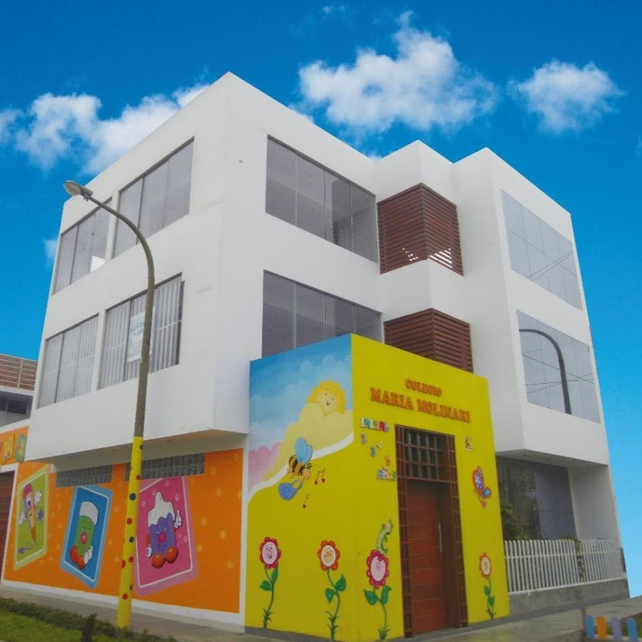

Visión
Ser un Institución Educativa líder en la formación integral de niños y niñas en etapa Pre – Escolar, basada en valores y principios; permitiéndoles el desarrollo exitoso en su vida futura.
Misión
La misión de nuestra Institución es formar niños y niñas líderes, autónomas y competentes. Estamos comprometidos con el desarrollo integral del estudiante por medio de un currículo diversificado y contextualizado a nuestra realidad dentro de un ambiente democrático, reflexivo, de paz y de excelencia académica, contemplando la trascendencia que tiene esta primera etapa en el desarrollo de los niños y niñas para su futuro desenvolvimiento dentro de la sociedad.
Nuestros Comienzos
-

Historia
El Nido Maria Molinari abrió sus puertas el 07 de Marzo del 2011, atendiendo a niños y niñas de Estimulación Temprana y Educación Inicial. El nido nació con el objetivo de dotar a la comunidad de una buena opción educativa, cuidado y atención para los más pequeños, estamos orgullosos de que así siga siendo hasta el día de hoy. Durante estos años hemos crecido juntos a los niños y niñas, a quienes hemos acompañado en su progreso hacia la Educación Primaria. Estamos felices de saber que cada familia nos guarda un cariñoso recuerdo por formar parte de la infancia de sus hijos e hijas. Estamos comprometidos en proporcionar el cariño, el respeto y la responsabilidad en nuestro quehacer diario.
Nosotros
-
Acerca
El nido Maria Molinari es una Institución Educativa que brinda Educación Integral a niños y niñas de Estimulación Temprana y Educación Inicial. Cuenta con un equipo de profesionales capacitados en la labor educativa, cuidado y atención de nuestros estudiantes, proporcionándoles las herramientas cognitivas, sociales y emocionales no solo para el colegio sino para la vida.